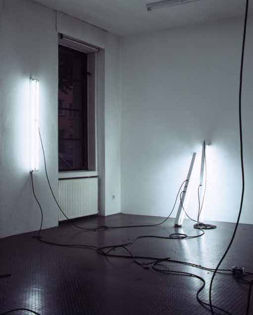
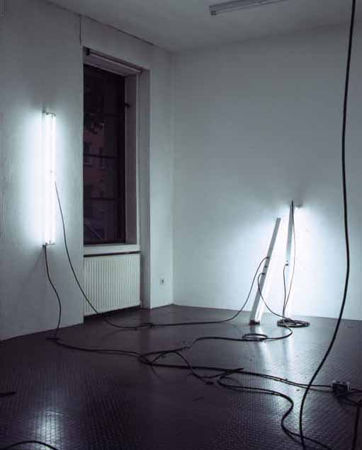

Galerie Anselm Dreher / Matthew
McCaslin

Matthew McCaslin, "Roadrunner" (detail), 1996
6 - (2 bulb) fluorescent fixtures, 1 - fan 16 inches
1 radio (any channel), electrical rubber SJ cable
Galerie Anselm Dreher / Matthew McCaslin

Matthew McCaslin, "Roadrunner" (detail), 1996
6 - (2 bulb) fluorescent fixtures, 1 - fan 16 inches
1 radio (any channel), electrical rubber SJ cable